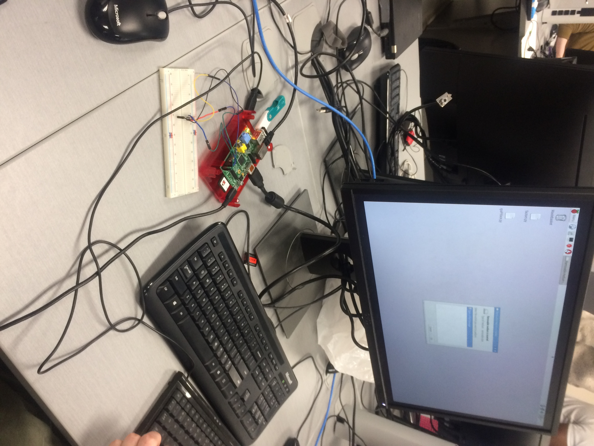

CAM Android Applcation.
Check out my first Android application, and in conjuction with an IoT device.
TFTP File System.
Find out more about this complex system, and how I contributed to the project.

Washer Detector.
Click here to find out more about my first coding project, an image detection program.